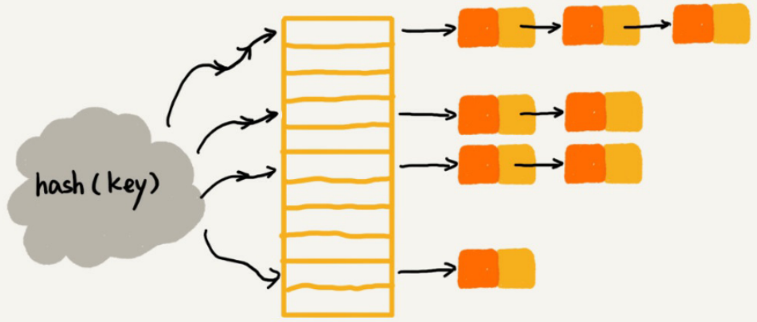
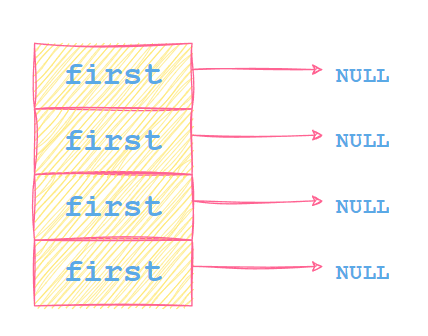
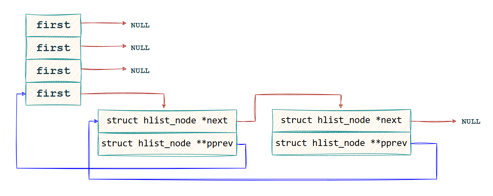
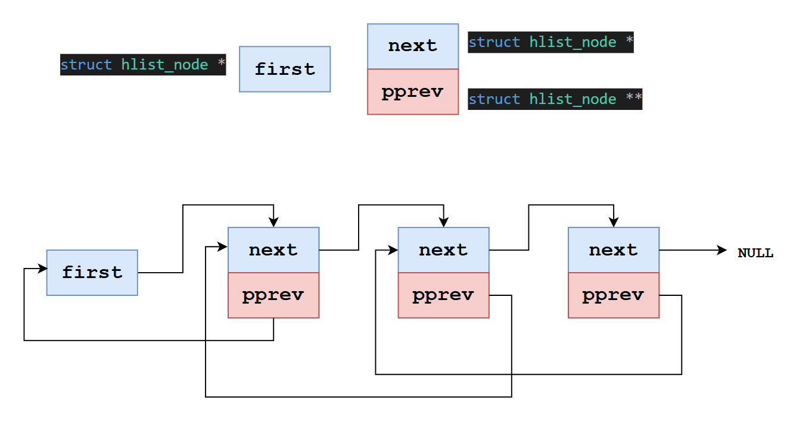
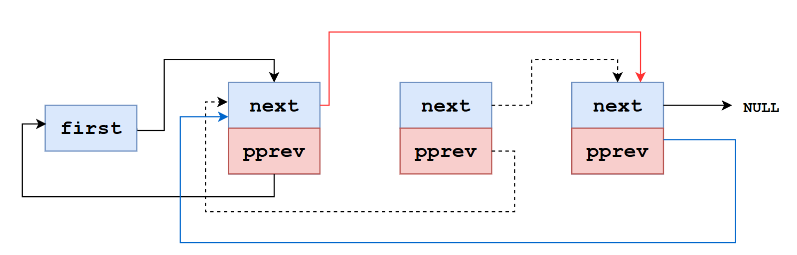

第7天：哈希表
第7天：哈希表
上篇文章说 linux kernel 中有 2 个头文件 list.h 和 hash.h（路径是 /usr/src/linux-headers-$(uname -r)/include/linux/）
仅包含这 2 个头文件，就能快速实现链表和哈希表。
这节我们学习哈希表（Hash Table）。
什么是哈希表
哈希表是一种数据结构，它通过键（Key） 来直接访问值（Value），其核心作用是实现 “近似常数时间”的查找、插入和删除操作。
想象一下你要在一本没有目录、内容乱序的百科全书里找“哈希表”这个词条。你只能一页一页地翻，这是线性查找，效率很低。
但如果这本书有索引，你可以直接查“H”开头的词条在哪一页，然后快速定位。哈希表就是这样一个“索引”。
它的核心思想是：
- 预分配一个数组：这个数组称为“哈希桶”（Buckets）。
- 建立一个“哈希函数”（Hash Function）：这个函数能将任意大小的“键”（Key，如一个字符串、一个数字）计算成一个整数（即数组的索引）。key 是存储在哈希表中的数据的唯一标识符。
- 将数据存储到计算出的索引位置：这样，当我们要查找某个键对应的数据时，不需要遍历整个数组，只需要再次用哈希函数计算键的索引，然后直接去数组的那个位置读取即可。也就是说，可以大大缩短查找时间。
例子
让我们用一个具体的例子来模拟哈希表的工作流程。
目标：存储一组员工信息，用员工工号作为键（Key）来快速查找员工姓名(Value)。
| 工号 (Key) | 姓名 (Value) |
|---|---|
| 123456 | 张三 |
| 234567 | 李四 |
| 000001 | 王五 |
第 1 步：创建哈希表（分配数组）
我们创建一个大小为 10 的数组（10个桶）来存储数据。
1 | |
第 2 步：设计哈希函数
我们设计一个简单的哈希函数：hash(Key) = Key % 10（用键除以 10 取余数）。
hash(123456) = 123456 % 10 = 6hash(234567) = 234567 % 10 = 7hash(000001) = 1 % 10 = 1
第 3 步：插入数据
将员工信息存储到计算出的索引位置。
- 将 (“123456”, “张三”) 存入索引 6。
- 将 (“234567”, “李四”) 存入索引 7。
- 将 (“000001”, “王五”) 存入索引 1。
现在哈希表的状态：
1 | |
第 4 步：查找数据
现在要查找工号 234567的员工叫什么。
- 计算哈希值：
hash(234567) = 7 - 直接访问数组第 7 个位置，得到 “李四”。只需一次计算和一次访问，极其高效。
同理，查找工号 000001：
hash(000001) = 1- 访问索引 1，得到 “王五”。
哈希冲突（Collision）与解决方案
上面的例子很完美，但如果现在要插入一个新员工 (“123466”, “赵六”)呢？
hash(123466) = 123466 % 10 = 6- 但索引 6 的位置已经被 “张三” 占用了！
这种情况就叫做“哈希冲突”（Hash Collision）：两个不同的键经过哈希函数计算后，得到了相同的索引地址。
解决方案 1：链地址法（Chaining）
这是最常用的方法。不让数组的每个位置只存一个元素，而是存一个链表（或列表）。当发生冲突时，就将新的键值对添加到这个位置的链表中。
1 | |
索引 6 的位置已经被 “张三” 占用了，但是没有关系，想象 6 这个位置有一条链表，把 [123466”,赵六] 插入链表中
当查找 “赵六” (123466) 时：
- 计算
hash(123466) = 6 - 找到索引 6 的链表，然后在这个链表中按顺序查找键
123466。虽然需要遍历一个小链表，但比遍历整个数据集要快得多。
链地址法（Chaining） 的示意图如下：

后文要讲的代码就是用链地址法来解决冲突的。
解决方案 2：开放地址法（Open Addressing）
当发生冲突时，按照某种规则在数组中寻找下一个空闲的槽位。
某种规则，比如说：
1、线性探测法：当往散列表中插入数据时，如果某个数据经过散列函数散列之后，存储位置已经被占用了，就从当前位置开始，依次往后查找，看是否有空闲位置，直到找到为止。
2、二次探测法：二次探测，跟线性探测很像，只是步长是二次方，线性探测步长是 1。
3、双重哈希法：先用第一个散列函数，如果计算得到的存储位置已经被占用，再用第二个散列函数，依次类推，直到找到空闲的存储位置。
以线性探测法为例，当前已经插入了 3 个键值对。
1 | |
此时要插入“赵六” (123466)
- 计算
hash(123466) = 6 - 找到索引 6 ，但是已经有张三了，则检查索引 7，是李四，再检查索引 8，是空的，插入 [123466”,赵六]
1 | |
当查找 “赵六” (123466) 时：
- 计算
hash(123466) = 6 - 找到索引 6 ，不是赵六，再查找索引 7，还不是赵六，再查找索引 8，发现是赵六，找到了。
代码讲解
下面，我们讲解 list.h 和 hash.h 中和哈希表有关的重要代码。
定义并初始化哈希表
1 | |
宏 DEFINE_HASHTABLE(name, bits) 的作用是定义一个空的哈希表。
其实就是定义一个数组，数组大小是 1 << (bits);
比如
1 | |
展开就是
1 | |
先复习一下 C99 的数组初始化语法：1
2
3
4// C99 的数组初始化语法
int arr[5] = {[2] = 10, [4] = 20}; // 只初始化索引2和4，其余自动置0
int arr[10] = {[0 ... 4] = 1, [5 ... 9] = 2}; // 前5个为1，后5个为2
gnu 在上面的基础上，增加了新的功能：用 [start … end] = value 初始化连续范围的元素;
再回到这句代码
1 | |
struct hlist_head 的定义 和 HLIST_HEAD_INIT 的定义如下：
1 | |
意思就是把 my_hash[0] 的成员 first 初始化为 NULL，把 my_hash[1] 的成员 first 初始化为 NULL，…
把 my_hash[31] 的成员 first 初始化为 NULL；
“.成员名 = …” 这种用法需要编译器支持C99或更高标准;
数组类型是 struct hlist_head， 这个结构体就一个成员，名字是 first，first 的类型是指向 struct hlist_node 的指针。

假设数组大小是 4，初始化后的情况如上图，其实是 4 条空的链表。
插入
上一节的链表，头节点和宿主里面的节点是一样的，都是 struct list_head
但是这个哈希表就不一样了，头节点是 struct hlist_head
而宿主里面的节点是 struct hlist_node
1 | |
和链表使用方法类似，我也需要把 struct hlist_node 嵌入到宿主结构体中。

上图表示在最后一个桶的头节点后面插入了 2 个节点（没有画宿主结构）;
红色箭头指向当前节点的下一个节点，蓝色箭头指向当前节点的上一个节点；
需要注意，红色指针指向的类型是 struct hlist_node；
蓝色指针指向的类型是 struct hlist_node ，所以它的类型是 struct hlist_node *
1 | |
第 21 行把 stu1插入哈希表。
hash_add 有三个参数：
参数1：哈希表的名字，其实就是数组名;
参数2：宿主结构里面 struct hlist_node 的地址;
参数3：key 的值，如果是字符串，需要自己写函数(例如上面的 get_key)，作用是把字符串映射到某个 key;
hash_add 其实是宏，有关代码如下
1 | |
hlist_add_head 这个函数的作用是把节点 n 插入到链表的第一个位置（头插）;
第 6 行，h->first 得到第一个节点的地址，赋值给 first，于是 first 指向第一个节点;
我们的目标是把节点 n 插入到 first 指向的节点前面，所以有第 7 行 n->next = first;
h->first 应该指向新插入的节点，所以有第 10 行 h->first = n;
n->pprev 应该指向头节点的 first 成员，所以有第 11 行 n->pprev = &h->first;
还有一点要注意，因为节点 n 的插入， 它的后继节点的 pprev 值也应该改变，所以有第 9 行，设置 first->pprev 为 &n->next，因为 pprev 的值是它的前驱的 next 成员的地址。
但是，如果把 n 插入空链表，n 就没有后继节点，此时第 8 行的 first 就是 NULL，不会执行第9 行。
1 | |
这个宏的目的是把 key 的值映射为数组的索引，细节可以不用深究。
总结一下， 对于 hash_add(hashtable, node, key)
hashtable 和 key 能计算出哪一个链表，得到 hlist_add_head 函数的参数 h；
node 代表要插入的节点，也就是 hlist_add_head 函数的参数 n；
最后会调用 hlist_add_head(struct hlist_node n, struct hlist_head h)
把节点 node 插入到某个链表的第一个位置。
遍历整个哈希表
还是上面的示例代码，我们给 main 函数里面多加点东西：
1 | |
第 5 行，再增加一个 stu2
第 7 行，把 stu2 插入哈希表
11~13 遍历整个哈希表，打印桶的编号（数组索引）和名字
运行结果是：
1 | |
第 11 行的 hash_for_each 是一个宏，作用是遍历整个哈希表。
1 | |
先看第 2 行最后的 HASH_SIZE(name)
1 | |
需要注意，sizeof(x)表示的是数组 x 总共占多少字节，这时候 x 的类型不是指针，是数组；
但是在 sizeof(*(x)) 中，x 会自动转换为指向数组第一个元素的指针，所以 sizeof(*(x)) 表示一个元素占多少字节;
两个式子相除，就得到元素个数；
所以上面 for 循环的意思是从 bkt = 0， obj = NULL 开始， 在 obj == NULL 成立的情况下，一直循环到 bkt 等于(元素个数-1）
obj == NULL 这句话，可以先不管（后文会解释）
这样 for 循环就是
1 | |
其实就是遍历每个桶（链表）。
第 4 行 hlist_for_each_entry 的代码如下：
1 | |
先看第 6 行的 hlist_entry_safe 这个宏
在GNU C（GCC）中，可以使用一对括号 () 将一个由大括号 {} 包围的复合语句包裹起来，使其成为一个表达式，这种技术被称为“大括号表达式”或“语句表达式”。语句表达式的值就是复合语句最后一个表达式的值。
第 7~9 行就是语句表达式，它的值就是第 8 行条件表达式的值，也就是 ____ptr 的值
如果 ____ptr 是 NULL，则整个表达式的值就是 NULL；
否则，表达式的值就是 hlist_entry(ptr, type, member) 的值， 也就是 container_of(ptr, type, member)的值；
container_of 宏在上一节已经介绍过，作用是根据 ____ptr 的值（struct hlist_node 节点的地址）得到宿主结构体（后文称之为用户节点）的起始地址。
综上， hlist_entry_safe(ptr, type, member) 的作用是：
如果 ptr 为 NULL，这个表达式的值就是 NULL；否则，得到的是 ptr 指向的节点所在的宿主结构体的起始地址。
现在看pos = hlist_entry_safe((head)->first, typeof(*(pos)), member);
当链表为空的时候，(head)->first 是 NULL，那么 pos 就是 NULL，此时不满足 for 语句的迭代条件（下图第 2 行），所以不执行用户代码；
当链表不为空，pos 指向的是第一个用户节点，会执行用户代码，然后会执行第 3 行，让 pos 指向下一个用户节点。
1 | |
所以，上面 3 行代码的意思是，遍历某个链表，针对每一个用户节点，执行用户代码。如果链表是空，就什么也不干。
注意，当遍历完链表的时候， pos 的值是 NULL，这是因为链表上最后一个用户节点的 struct hlist_node 的 next 成员指向 NULL；
再回到代码
1 | |
不管链表是空还是遍历完成，都会执行外层 for 循环的 (bkt)++(上面第 3 行) ， 意图是切换到下一个桶，然后会判断
1 | |
这里的 obj 就是前文说的用来遍历链表的 pos, （同一个东西，换了名字）
前面分析了，不管链表为空还是把链表遍历完毕，pos 都会等于 NULL，所以 obj == NULL 成立。
我们再假设 (bkt) < HASH_SIZE(name)，所以上面的式子成立。
此时还是执行 hlist_for_each_entry(obj, &name[bkt], member)
但是因为 bkt 增加了，所以遍历的是下一个链表。
直到 (bkt) == HASH_SIZE(name)，外层循环才停止。
所以，两层 for 循环完成了整个哈希表的遍历。
前面分析了，不管是链表为空还是遍历完毕，pos 都会等于 NULL，所以 obj == NULL 肯定成立，
那外层 for 循环的判断条件为什么是 obj == NULL && (bkt) < HASH_SIZE(name)？
似乎obj == NULL 显得多余。我开始也这么认为，但是现在想明白了。
实际应用中，当我们查找到某个节点的时候，就不需要再往下遍历了，一般我们会用 break 跳出循环。
如果没有 obj == NULL 这个条件，我们只能跳出内层循环，但是不一定能跳出外层循环，除非已经遍历到最后一个桶。
但是有了 obj == NULL 就不一样了。
请看下面的代码：
1 | |
第 2 行，如果名字是 Jack，打印后就 break; 这一定会跳出内层循环。
然后 (bkt)++；
再然后判断 obj == NULL && (bkt) < HASH_SIZE(name)
此时，cur （也就是 obj）指向用户节点 Jack ，所以条件不成立，结束外层循环。
上面代码的执行结果是
1 | |
如果缺少 obj == NULL 这个条件，(bkt) < HASH_SIZE(name)为真，就会继续遍历 bkt = 1 这个桶，这不是我们想要的。
遍历某个桶
当多个用户节点具有相同哈希值的时候，会被放入同一个桶中。
hash_for_each_possible 这个宏用来遍历某个桶（由 key 指定），或者说某个链表。
1 | |
这段代码前面已经解释过了。
hash_for_each_possible 需要 4 个参数。
参数 name： 数组的名字
参数 obj: 指向用户节点的指针
参数 member: struct hlist_node 在宿主结构体中的成员名字
参数 key:哈希值
继续修改 main 函数
1 | |
执行结果是：
1 | |
有人会问，前文不是说 key 是存储在哈希表中的数据的唯一标识符吗？为什么可以有 2 个 Jack？
其实在哈希表中，是否允许 key 重复取决于具体的设计需求。
大多数经典哈希表（如 C++ 的 std::unordered_map、Python 的 dict）不允许重复 key。插入相同 key 时，会 覆盖旧值（更新操作）。
例如下面的 python 代码：
1 | |
但是，链式存储允许 key 重复。相同 key 的不同 value 追加到同一链表中。
我们属于后面这种情况。
现在我们用 hash_for_each_possible 遍历 Jack 所在的链表（或者桶）：
1 | |
执行结果是：
1 | |
删除节点
函数 hlist_del 的作用是删除节点 n，注意，仅让 n 从链表中脱离，并不释放内存。
参数是要删除节点的 struct hlist_node 的地址。
代码如下：
1 | |
第 4~5 行，在 Linux 内核代码中，LIST_POISON1和 LIST_POISON2是特殊的指针值，用于标记链表节点已被删除或处于无效状态。
如果代码试图访问 LIST_POISON1或 LIST_POISON2，会触发内核异常或调试工具（如 KASAN）的报告。
我们重点关注第 3 行的 __hlist_del 函数。

1 | |
第 3~4 行得到 n 的后继节点和前驱节点。
假设 n 是图中第二个节点，那么 n->next 是第 3 个节点的地址，n->pprev 是第 1 个节点的 next 成员的地址，
3~4 行执行后，next 是第 3 个节点的地址，pprev 是第 1 个节点的 next 成员的地址；
因为要删除 n, 所以应该让第 1 个节点的 next 成员指向第 3 个节点，也就是要修改第1个节点的 next 成员的值为第 3 个节点的地址
所以有第 5 行， *pprev = next;
这样就建立了下图中的红色箭头；
但是没有完，还要建立蓝色箭头，也就是修改第 3 个节点的 pprev 成员的值，让它等于第一个节点的 next 成员的地址;
所以有第 7 行，next->pprev = pprev;

总结一下，为了删除某个节点，要修改被删除节点的前驱节点的 next 成员值，还要修改被删除节点的后继节点的 pprev 成员值；
不过还有一种可能，就是要删除的节点是链表中最后一个节点，因为它没有后继节点，仅需要修改它的前驱节点的 next 成员为 NULL。
代码第 6 行，就是判断被删除的节点是否有后继节点。
安全遍历整个哈希表
安全遍历要用的宏是 hash_for_each_safe
它的定义如下图第 1 行
1 | |
第4 行的 hlist_for_each_entry_safe 是关键，它的定义在第 6 行；
看第 6 行的 hlist_for_each_entry_safe
它和 hlist_for_each_entry 的区别在于：多了第二个参数 n
第 8 行也使用了语句表达式；
n = pos->member.next 是为了让 n 指向 pos 的后继。
注意，n 的类型和 pos 不一样， pos 指向用户节点，n 指向哈希表节点（ struct hlist_node）
即使用户代码把 pos 指向的用户节点删除了，当执行第 9 行 的时候，由于 n 已经保存了 pos 的后继，所以通过 hlist_entry_safe 可以得到后继用户节点的地址；
比较巧妙的是 ({ n = pos->member.next; 1; })
这个 1 是强行让表达式为真，这样才能执行用户的代码，如果没有这个 1；
当 pos 指向最后一个节点的时候， pos->member.next 是 NULL， pos && ( {n = pos->member.next;} ) 这个表达式为假，就无法执行用户代码了。
还有一种写法，利用逗号表达式，也可以达到目的。
把第 8 行改为pos && (n = pos->member.next, 1);
因为整个逗号表达式的值是最后一个表达式的值，所以 (n = pos->member.next, 1) 的值为真。
这里加括号是因为逗号表达式的优先级比 && 低，如果不加括号，那相当于(pos && n = pos->member.next), 1; 显然这是不对的。
安全遍历某个桶
1 | |
前文已经介绍了 hlist_for_each_entry_safe 宏;
所以 2~3 行的代码没有难度。唯一不同的是 hlist_for_each_entry_safe 的第 3 个参数 head;
在这里变成了 &name[hash_min(key, HASH_BITS(name))];
方括号里面的 hash_min(key, HASH_BITS(name)) 这个宏的目的是把 key 的值映射为数组的索引，比如是 x;
&name[x] 就是上面第 4 行的 &name[bkt] 啊，一回事。
再和前面讲的 hash_for_each_possible 对比一下
1 | |
hash_for_each_possible_safe 多了一个 tmp(第 3 个参数)，其实是
hlist_for_each_entry_safe(pos, n, head, member) 的 n
判断哈希表是否为空
1 | |
这段代码非常好懂，第 14 行的 hlist_empty 判断链表是否为空，为空返回真；
__hash_empty 判断所有桶是否为空，只要有一个非空，就返回假；所有的桶都空才返回真。
完整示例代码
1 | |
本文到这里就结束了。希望读者有收获。